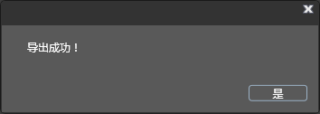

项目使用
导出
- 选择菜单栏->导出项目
- 设置导出目录
- 点击确认并完成



复制文件
将导出目录中的文件全部复制到项目的Resources文件夹中。
使用
将导出后的项目放到资源文件中。
//从导出文件异步加载动画
CCArmatureDataManager::sharedArmatureDataManager()->addArmatureFileInfo("Cowboy0.png","Cowboy0.plist","Cowboy.ExportJson");
//根据动画名称创建动画精灵
CCArmature *armature = CCArmature::create("Cowboy");
//播放指定动作
armature->getAnimation()->playByIndex(0);
//修改属性
armature->setScale(0.5f);
//设置动画精灵位置
armature->setPosition(200,300);
//添加到当前页面
this->addChild(armature,2);
Copyright © 2013 CocoStudio.org. All Rights Reserved. 版本:1.3.0